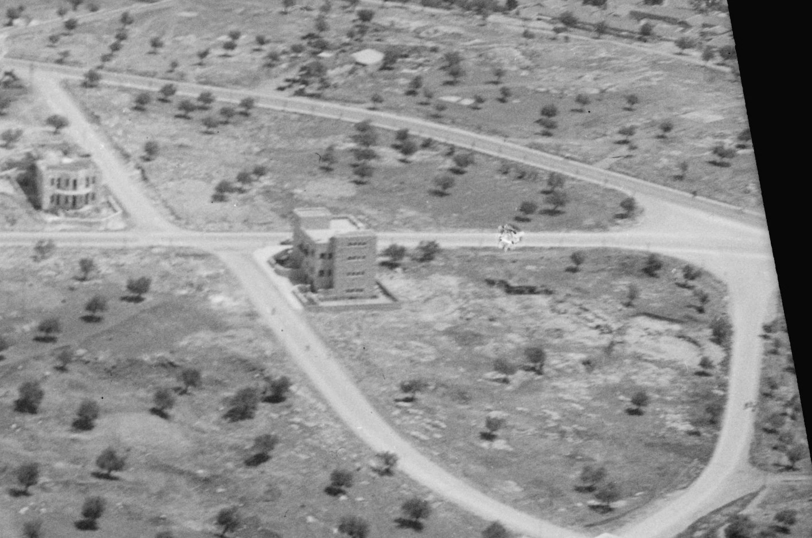
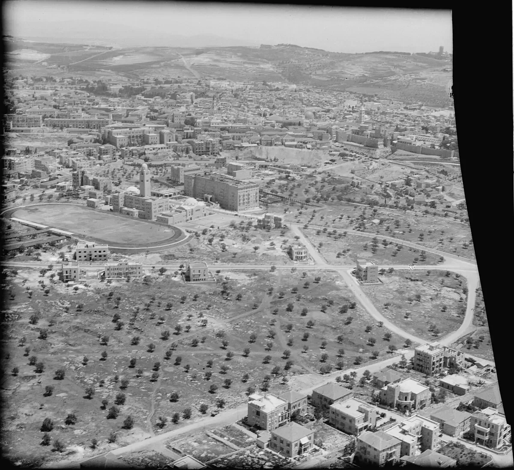
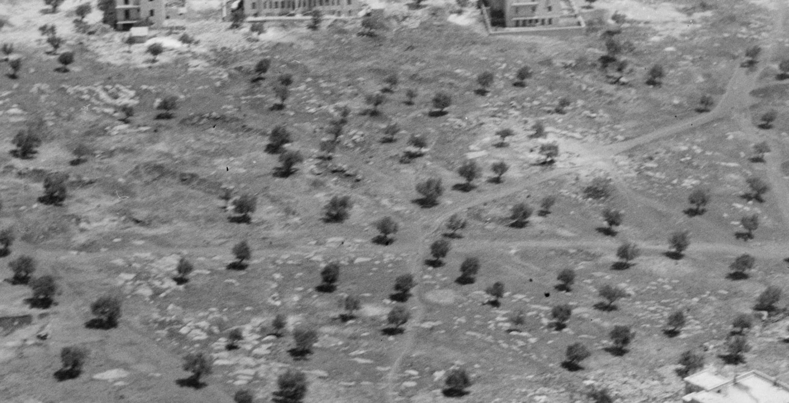

아직 펼치지 않은 카드다시 그리고 다시 만드는 성경 · 2샤갈의 성경 판화1930년에 시작한 성경 판화가 1956년에야 책으로 나왔어요. 그 26년 사이에 무슨 일이 있었을까요?샤갈이 성경 그림을 다 그리는 데 26년이 걸렸대!
1931년 봄예루살렘 · 사진은 1933~1946년 사이
샤갈의 성경 판화
1930년 파리의 화상(그림을 사고파는 사람) 볼라르에게 성경 판화를 부탁받은 샤갈은, 이듬해 봄 아내와 딸과 함께 성경의 땅을 찾았어요. 그가 걸었던 예루살렘을 몇 해 뒤 하늘에서 찍은 사진이 남아 있어요. 사진 속 여섯 곳을 찾아, 그 무렵의 도시를 거닐어 보세요.
화가 샤갈 아저씨가 성경 그림을 그리려고 성경의 땅으로 여행을 갔대. 하늘에서 찍은 옛 예루살렘 사진에서 여섯 곳을 찾아볼까?
검수 전 시안이에요(기준서 1판). 여행에 대한 것은 크리스티 경매 글, 브리드웰 도서관, 『성서고고학 리뷰』, 마르크 샤갈 공식 누리집, 텔아비브 미술관의 역사 책, 『태블릿』, 『타임』에 있는 것만 옮겼어요. 사진 속 건물은 ‘예루살렘 스토리’의 글로 확인했고, 사진이 샤갈이 다녀간 뒤(1933~1946년 사이)에 찍은 것이라고 밝혔어요. 샤갈의 그림과 판화는 저작권이 살아 있어 싣지 않고 링크만 걸었어요. 상상은 ‘눈 감고 상상해 보기’에만 썼어요. 2026년 11월 22일 ‘더 깊이’(열쇠 물음 셋과 뒷이야기)를 얹으며, 『타임』 · 크리스티 · 브리드웰 도서관 · 미국 고서적상 협회 · 뉴욕 현대미술관 · 유대 가상 도서관 · 브리태니커의 글을 다시 열어 확인했어요.
시안 확인용카드 단계 미리 보기
1
하늘에서 본 예루살렘
1931년 봄, 마르크 샤갈(Marc Chagall)은 아내 벨라, 딸 이다와 함께 마르세유에서 배를 타고 이집트 알렉산드리아로 건너갔어요. 카이로와 피라미드를 본 뒤 하이파, 텔아비브, 예루살렘을 거쳐 사페드까지 갔어요.
이 사진은 남서쪽 하늘에서 예루살렘을 찍은 거예요. 사진 속 YMCA 탑은 1933년에 다 지었으니, 샤갈이 다녀가고 몇 해 뒤의 모습이에요. 사진 속 숫자 여섯 개를 하나씩 눌러 보세요.
사진 속 숫자를 하나씩 눌러 보세요. 샤갈이 다녀가고 몇 해 뒤의 예루살렘이에요.
남서쪽 하늘에서 본 예루살렘(1933~1946년 사이) · 사진: 매트슨 사진 모음 · 퍼블릭 도메인 · 위키미디어 공용(미국 의회도서관)
그림 위의 숫자나 아래 번호를 눌러 보세요.
여섯 곳을 다 찾았어요. 성벽 안 옛 도시 둘레로, 새 건물과 빈 바위 들판이 함께 있던 예루살렘이에요.
볼라르는 처음에 그를 성지(성경의 땅)로 보낼 생각이 없었다고 해요. 샤갈이 성지에 가 보고 싶다고 하자 볼라르는 “그럴 것 없소! 차라리 피갈 광장에나 가 보지 그래요?”라고 했대요(『타임』 1965년, 이 안내서가 옮김). 피갈 광장은 파리의 번화가예요.
여행 길을 연 것은 텔아비브의 첫 시장 메이르 디젠고프(Meir Dizengoff)의 초대였어요. 텔아비브에 세울 미술관 일을 함께하자는 부름이었어요.
샤갈은 뒷날 미술 평론가 자크 라세뉴에게, 이 여행에서 본 팔레스타인이 자기가 받은 가장 생생한 인상이었다고 말했어요.
1931년 봄 예루살렘의 샤갈이라면, 무엇을 그려 왔을까요?
샤갈 아저씨가 배를 타고 성경의 땅으로 여행을 왔어. 하늘에서 찍은 예루살렘 사진이야.
물어보기하늘에서 보니 옛 도시와 새 동네가 어떻게 달라 보여?
2
꿈으로만 보던 성경
파리로 돌아온 샤갈은 판화의 밑그림이 될 과슈(물에 녹여 쓰는 불투명한 물감) 그림을 마흔 장 그렸어요. 그 그림들을 보며 동판에 하나씩 새겨 나갔어요.
여행을 떠나기 전을 돌아보며, 샤갈은 뒷날 이렇게 말했다고 해요.
“나는 성경을 볼 수 없었어요. 꿈꿀 수만 있었지요.”
마르크 샤갈 · 『성서고고학 리뷰』의 영어 글을 이 안내서가 옮김
샤갈 아저씨는 그 여행 전에는 성경 이야기를 꿈으로만 그려 봤대.
물어보기꿈으로만 보던 곳에 진짜로 가 보면 무엇이 제일 궁금할까?
눈 감고 상상해 보기
1931년 봄, 예루살렘 둘레의 바위 언덕이에요. 한낮의 햇빛에 흰 돌이 눈부셔요. 선인장 그늘에 앉은 화가가 멀리 성벽을 바라보며 붓을 들어요. 마른 흙냄새가 바람에 실려 와요.
눈을 감아 봐. 햇빛이 쨍쨍한 돌 언덕이야. 선인장 그늘에 앉은 화가 아저씨가 멀리 성벽을 그려.
나의 자리
샤갈은 1931년 봄 성경의 땅을 처음 걸었어요. 사진 속 예루살렘에서, 나는 어디에 가장 먼저 서 보고 싶나요?
사진 속 예루살렘에서 어디에 제일 먼저 가 보고 싶어?
마음에 닿는 한 줄을 고르거나 직접 써 보세요. 한 줄을 남기면 이 자리의 도장이 찍혀요. 이 기기에만 저장돼요.
더 깊이
이야기를 보다 궁금해질 만한 것들이에요. 답을 읽거나 짧은 영화로 보세요.

꿈으로만 보던 성경의 땅, 직접 보고 나서 무엇이 달라졌어요?
1930년에 시작한 판화가, 왜 1956년에야 책이 됐어요?
뒷이야기
아직 펼치지 않은 이야기예요. 누르면 이야기가 펼쳐지고 색이 돌아와요. 더 알고 싶으면 근거를 따라가 보세요.
다 펼치면, 다음에 오실 때 새 이야기가 찾아와요.
오늘의 뒷이야기는 여기까지예요. 다음에 오시면 새 이야기가 기다리고 있어요.
펼친 뒷이야기 · 누르면 다시 볼 수 있어요
더 찾아보기
기록마다 다른 점
얼마나 머물렀나 브리드웰 도서관은 두 달, 『성서고고학 리뷰』와 텔아비브 미술관의 역사 책은 석 달쯤이라고 적어요. 밀라노의 구아스탈라 화랑은 2월부터 4월까지로 적었어요.
여행이 판화에 남긴 것 크리스티는 판화 「라헬의 무덤」이 1931년 예루살렘에서 그린 그림을 바로 바탕으로 삼았다고 적어요. 프레스텔 출판사의 화집은 여행이 성경 그림에 준 직접적인 눈의 영향은 적었다고 봐요.
‘꿈꾸었다’는 말 『성서고고학 리뷰』는 이 말을 여행 전을 돌아본 말로 실었어요. 『주이시 프레스』는 같은 말을 “나는 성경을 보지 않았다, 꿈꾸었다”로 옮기고, 어려서부터 성경에 사로잡혔다는 말과 함께 실었어요.
66장일까, 65장일까 1939년까지 마친 판을 『타임』과 브리드웰 도서관은 66장, 『주이시 프레스』는 65장으로 적어요. 책이 나온 해도 대부분 1956년으로 적지만 『타임』은 1957년으로 적었어요.
「통곡의 벽」은 몇 년에? 텔아비브 미술관은 이 그림을 1932년 작품으로 적고, 마르크 샤갈 공식 누리집은 1931년 첫 방문 때 그렸다고 적어요.
사진의 때 위키미디어 공용은 이 사진을 1933~1946년 사이로 적고, 찍은 사람은 이름 없이 ‘매트슨 사진 모음’으로만 적어요. 앞면처럼 ‘1930년대 사진’이라 부르기도 해요.
하늘에서 본 예루살렘 금박
사진 속 여섯 곳을 모두 찾아 읽으면 카드에 금박이 입혀져요.
사진 속 여섯 곳을 모두 찾아 읽기
1931년 샤갈의 자리에서 채색
둘 가운데 하나만 해도 카드가 채색돼요.
1931년의 샤갈이라면 무엇을 그려 왔을지 고르기
아이와 함께 ‘영화처럼 보기’를 끝까지 보기
근거 보기 (24)
- 크리스티 경매, 샤갈 「라헬의 무덤」(1931, 캔버스에 유화, ‘Marc Chagall 931 Jerusalem’) — 1930 볼라르의 부탁, 1931년 초 아내·딸과 알렉산드리아·카이로·피라미드 → 베이루트에서 하이파·텔아비브·예루살렘, 예루살렘에서 회당 안과 통곡의 벽, 바깥에서 그림(마이어: 바위 언덕의 선인장 아래), 스테이트 열두 번까지, 1934년 멈춤, 판화 「라헬의 무덤」이 이 그림을 바탕으로, 라세뉴에게 ‘가장 생생한 인상’, 에드몽 플레그 동행
- 『성서고고학 리뷰』 곁글 「화가에 대하여 — 마르크 샤갈」 — 1931년 석 달 여행, 여행 전을 돌아본 말(“I couldn’t see the Bible, I could only dream it”), 돌아와 과슈 마흔 장
- 브리드웰 도서관(남감리교대학교) 온라인 전시 「The Word Embodied」 — 1930 볼라르, 두 달, 105장, 포탱 공방 66장, 아상 공방 39장(1952~1956), 동판에 흠, 1956 테리아드, 몽발 종이 295부, 1638년 제네바 성경, 그랑장 활자, 국립인쇄소
- 『타임』 1965년 7월 30일 「Painting: Midsummer Night’s Dreamer」 — 볼라르의 “피갈 광장” 말, 1931년 팔레스타인, 1939년까지 66장, 1957년 105장
- 『태블릿』 「Interiors」(지니 로즌펠드) — 볼라르는 성지에 보낼 생각이 없었음, 디젠고프의 초대, 1931년 봄 샹폴리옹호로 마르세유→알렉산드리아, 비알릭·플레그, 사페드의 하아리 회당
- 텔아비브 미술관의 역사를 다룬 책(idekel.co.il 디지털판 198쪽) — 디젠고프의 초대, 1931년 3월 초 벨라·이다와 함께, 석 달쯤, 「토라를 든 유대인」(첫 소장품)과 『죽은 혼』 판화 선물, 생각이 다름
- 구아스탈라 화랑(밀라노) 연보 — 1930 볼라르의 세 번째 일, 1931년 2~4월, 알렉산드리아·카이로·피라미드 → 하이파·텔아비브·예루살렘·사페드, 1956 테리아드
- 프레스텔 화집 『Chagall』 맛보기(PDF) — 1930 볼라르의 제안, 1931 팔레스타인, 여행이 성경 그림에 준 직접적인 눈의 영향은 적음, 1939년 멈추고 1952년 다시, 1956년 105장(테리아드)
- 마르크 샤갈 공식 누리집, 1931년 과슈 「무지개」 — 1930 볼라르의 부탁, ‘예언자의 책’, 1931 여행이 눈부신 빛을 불어넣음, 1956 테리아드의 105장
- 마르크 샤갈 공식 누리집, 크네세트의 「통곡의 벽」 — 1931년 첫 방문 때 그린 통곡의 벽, 텔아비브 미술관에 준 그림, 돌 틈에 자란 풀까지 가까이에서
- 구글 아트 앤 컬처(텔아비브 미술관) — 「통곡의 벽」 1932년, 73×92cm, 캔버스에 유화, 1948년 작가의 선물
- 암스테르담 시립미술관 — 「사페드의 회당 안」 1931년, 93.5×112cm, A 632
- 『주이시 프레스』(2025년 5월 7일) — 1931년 2월 도착, “I did not see the Bible, I dreamed it”와 어린 시절부터의 성경, 1931~1939년 65장, 1952~1956년 40장
- 예루살렘 스토리(아이다 아우데, 2023) — YMCA: 1926년 머릿돌, 일곱 해, 1933년 4월 18일 봉헌, 탑 152피트·종 33개, 1933년 4월 1일 첫 축구 경기, 1991년까지 하나뿐인 축구장
- 예루살렘 스토리(아이다 아우데, 2024) — 킹 데이비드 호텔 1931년 개관, 맞은편 줄리언 길(지금의 킹 데이비드 거리)의 YMCA
- 위키미디어 공용(미국 의회도서관 매트슨 사진 모음) — 남서쪽에서 본 예루살렘 항공 사진, 1933~1946년 사이, 퍼블릭 도메인
- 크리스티 「샤갈의 판화」 — 볼라르가 1939년 7월 자동차 사고로 세상을 떠남, 그때 성경 판화는 3분의 2쯤, 비시 프랑스는 유대인에게 안전하지 않아 가족이 뉴욕으로 피함, 전쟁 뒤 테리아드가 펴냄(재벌)
- ABAA(미국 고서적상 협회) 『성경』 1956년 초판 설명 — 테리아드(베르브), 두 권, 동판화 105장, 볼라르의 첫 두 일(『죽은 혼』 · 『우화』), 1939년까지 66장(재벌)
- 뉴욕 현대미술관 『마르크 샤갈』(1946) 연보 — 1930 성경 시작, 1939 전쟁과 고르드, 1941 미국, 1944 벨라 세상을 떠남(재벌)
- 유대 가상 도서관 「마르크 샤갈」 — 1887년 비텝스크의 가난한 유대인 집안, 아홉 남매의 맏이, 1941~1948년 미국(재벌)
- 브리태니커 백과사전 「Western Wall」 — 성전 산을 받치던 벽의 남은 부분, 두 성전이 무너진 해, 유대인의 기도, 이름의 유래(재벌)
- 『주이시 프레스』 리처드 맥비 「샤갈과 성경」(2011) — 우나 E. 존슨이 본 볼라르의 꿈, 1930~31년 색 과슈 스무 점(재벌)
- 아트데일리(2014) 니스 국립 마르크 샤갈 미술관 전시 「성경을 위한 색」 — 1930년 세 번째 일, 1966 · 1972년 기증으로 과슈 · 책 · 동판 소장(재벌)
- 메트로폴리탄 미술관 67.665.1–.105 『성경』 — 1958년 테리아드, 손으로 색을 입힌 판(재벌)
그림·사진·소리 출처
- 사진: 매트슨 사진 모음 · 퍼블릭 도메인 · 위키미디어 공용(미국 의회도서관)
- 사진: 매트슨 사진 모음 · 퍼블릭 도메인 · 위키미디어 공용(미국 의회도서관)
- 사진: 매트슨 사진 모음 · 퍼블릭 도메인 · 위키미디어 공용(미국 의회도서관)
- 사진: 매트슨 사진 모음 · 퍼블릭 도메인 · 위키미디어 공용(미국 의회도서관)
- 사진: 매트슨 사진 모음 · 퍼블릭 도메인 · 위키미디어 공용(미국 의회도서관)
- 사진: 매트슨 사진 모음 · 퍼블릭 도메인 · 위키미디어 공용(미국 의회도서관)
- 사진: 매트슨 사진 모음 · 퍼블릭 도메인 · 위키미디어 공용(미국 의회도서관)
- 사진: 매트슨 사진 모음 · 퍼블릭 도메인 · 위키미디어 공용(미국 의회도서관)
- 판화가 아니라, 샤갈이 1931년에 다녀온 예루살렘의 1930년대 항공 사진이에요 · 사진: 매트슨 사진 모음, 미국 의회도서관 · 퍼블릭 도메인 · 위키미디어 공용
‘처음 만나는 기독교 문화’의 깊은 카드예요. 카드 단계와 남긴 글은 이 기기에만 저장돼요.